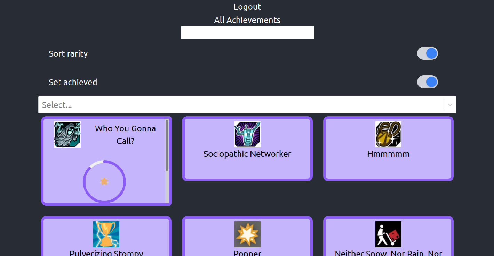
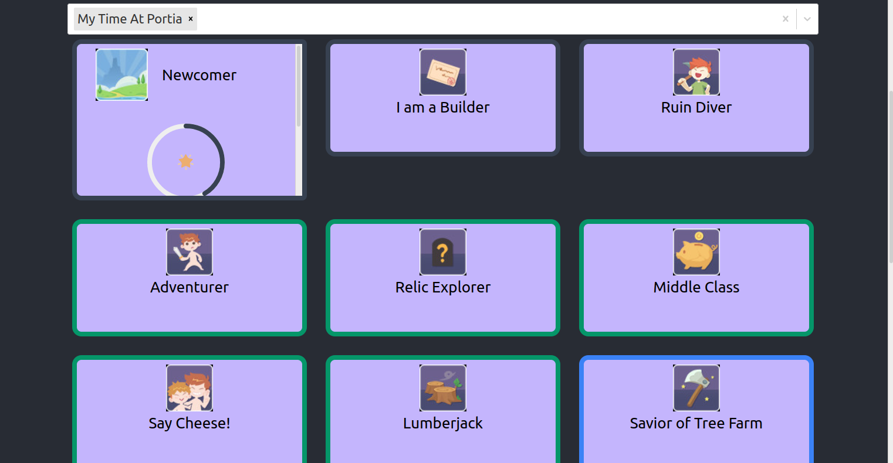

These are some highlights of previous works.
Click the headers for more information, these are selections, you can find most of my projects on my github
page.
highlights
These projects are more special to me, either due to the complexity or due to the fact that they just
deserved more in depth explanations.
Sirohcco
A project made in React, learned a lot about passing props, values and the reading of code in
React.
In this project I helped with the front end, checking where edits are needed, making edits on
visuals, designing of the cards, animated toggle buttons.
Loading can take a bit if you have a big steam library.
Sirohcco
Sirrohco is a colaboration, made by using the steam API, a not so beginner friendly API. Sicco, the owner of the repository made a lot of the back end and the authentication on top of managing the api calls and promises.
Xander helped with the back end as well, and Nikita worked on a big part of the filters.

Sorted by rarity and achieved

Showcase how different rarities have different colored borders, this calls back to rarity colors in MMO's
Css and Bootstrap/Tailwind
These projects are made in CSS, often combined with bootstrap or tailwind.
Tailwind I learned in self study, because I liked how it seemed to be a step between CSS and bootstrap.
- Design06ZoneHero
- A project where we tried to recreate an image by observing and learning to stack things.
- CSS-Flowershop
- A project where I was focussing on learning how to make a parallax.
- Tailwind-flowershop
- A project where I tested adding custom colors and fonts into tailwind. As well as working on grid.
JavaScript
These projects were made in Javascript, my favourite one was the pokedex.
The API is very well documented and it makes learning how to use an API much more easy.
- ajax-pokedex
- A project where we learned how to make API calls, I went for a minimalistic design. Will remake one
day, but way more extravagant.
- Rock-scissors-paper
- A project where we learned how to program rock paper scissors in JavaScript, it was a fun challenge.
- Ajax-weather-api
- A project where we used Api calls to make a weather application. It was very challenging as the API I
used was a bit tricky.
- JavaScript-Exercises
- A project where we solidified our JavaScript skills, by tackling chapters of problems one by one
PHP
A selection of PHP projects
- Php-debugging
- Our first PHP project. We had to learn to set up a server as well as to progressively fix mistakes to
learn to read PHP.
- Php-order-form
- A project where we got an order form, and had to write the logic behind it.
- Blackjack
- Learning how to make a game of Blackjack in Php.
- Pokedex in
Php
- Remaking the pokedex in php shortly after the JavaScript one, it was an interesting way to be
introduced to PHP because we could fall back on our previous experience.
Collaborations
These projects have been made in collaboration with my fellow BeCode students and coach.
- Interactive
page challenge
- Making a one page site for an event. This was very early in the course, Lea and I did the html on a
single pc, while Laura our mentor for this exercise did the JS part.
- deaf-techno
- Our first big group assignment, where we had to make a site for an event and everyone focussed on one
page. Our first introduction to merge conflicts.
- Php-Crud
- Making a crud for a class. Where we learned about many to one and one to many.
- challenge-workflow
- Making a ticketdesk and learning to deploy this on heroku. Made with Cis and Xander. This project was
definitely a challenge of skills.
- Sirohcco
- A collaboration in React. The goal was to create a better achievement overview than steam. My
contribution was design and front end. (explained more in depth under highlights.)
Vue.js
Projects made in Vue.js so I can get a feel what this framework is about.
- Music App
- My first exercise in vue.js. I wanted to get a feel for vue.js, so I at least know what it's about. Hoping to expand on it even more later.
This is more based on functionality at the moment, with minimum style.
Others
These projects are not on github but still part of the learning process.
- Wordpress
- this exercise was an introduction to wordpress. It was an interesting first experience with wordpress
and it's components.